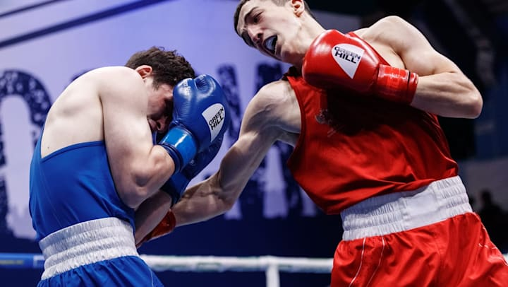
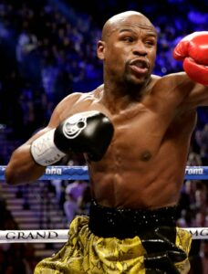
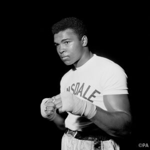
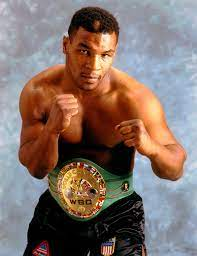
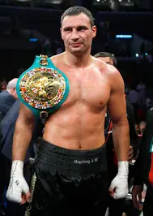
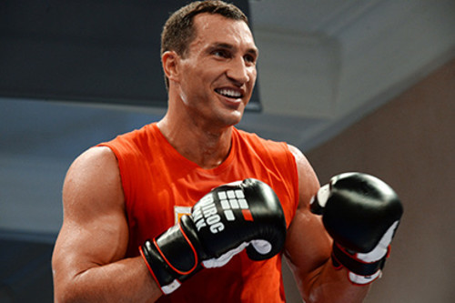
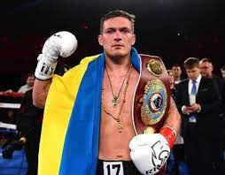
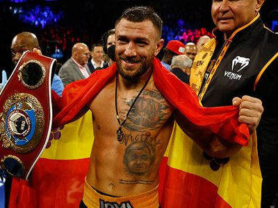
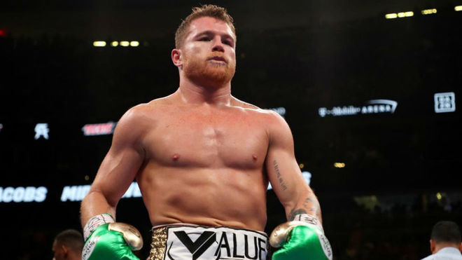

Основні Поняття
Бокс — контактний вид спорту, єдиноборство, в якому спортсмени наносять один одному удари кулаками в спеціальних рукавичках. Рефері контролює бій, який триває до 12 раундів.
Правила
Боксерський поєдинок поділений на раунди, кожен із яких триває від 3 до 5 хвилин, залежно від рівня поєдинку (аматорський чи професійний). Між раундами боксери мають 1 хвилину для відпочинку.
Перемога боксера у випадку, якщо суперник збитий з ніг і не може піднятися протягом десяти секунд (нокаут) або якщо він отримав травму, яка не дозволяє продовжувати бій (технічний нокаут). Якщо після встановленої кількості раундів поєдинок не був припинений, то переможець визначається оцінками суддів.
Історія
Найбільш ранні свідоцтва подібних змагань відображені ще на шумерських, єгипетських і мінойських рельєфах. Турніри з кулачних боїв, що нагадує бокс, проходили ще в Стародавній Греції. По-справжньому бокс став спортивним єдиноборством в 688 році до н. е., коли кулачні бої були вперше включені в програму античних Олімпійських ігор. Сучасний бокс зародився в Англії на початку XVIII століття.Бокс в Стародавній Греції
Ліванці й етруски називали бокс «пугілізмом». У Середземномор'ї не було поділу на вагові категорії, а клінч був суворо заборонений. У поєдинках не було раундів, і часто вони не обмежувалися за часом, закінчуючись нокаутом, визнанням поразки одним з учасників, а іноді навіть смертю. Хоча при тренуванні використовувалися рукавички, під час змагань учасники обмотували руки смужками з твердої шкіри, які захищали кулаки.
Бокс у Стародавньому Римі
У Стародавньому Римі існувало два різновиди боксу, і обидві вони походили від етруських традицій. По всьому Римі був популярний народний «бокс», але також існував і гладіаторський варіант бою. Учасниками подібних поєдинків в основному були злочинці і раби, які сподівалися завоювати свободу, але іноді билися вільні люди, аристократи і навіть жінки. Гладіатори билися в своєрідних рукавичках (кестах), іноді з шипами. Популярність кулачних боїв призвела до того, що навіть імператори почали брати в них участь, першим із них став Нерон.
Сучасний варіант
Друге життя бокс отримав в Англії, де у 1681 р. відбувся перший боксерський матч. Уже з 1698 р. в Англії почалися регулярні змагання. Лондон став центром боксу, куди почали з'їжджатися боксери з усієї країни. Матчі («зустрічі») відбувалися здебільшого на відкритому повітрі, без рукавичок і без правил. Матч закінчувався, коли боксер уже не міг продовжувати змагання. Зазвичай після падіння суперника на землю напад був заборонений.
Екіпірування та інвентар для боксу
Учасники боксерського поєдинку повинні бути одягнені та екіпіровані таким чином:
Одяг. Легке взуття без шипів і підборів, шкарпетки, шорти не нижче коліна та майка, що закриває їх груди та спину.
Капа - пристрій з гнучкої пластмаси для захисту зубів від спортивних травм.
Захисна раковина. Використовується для захисту паху.
Рукавички Червоні або сині рукавички (за кольором його кута на рингу), надані у його розпорядження організаторами змагань. На вимогу Міжнародної Асоціації Боксу рукавички повинні важити 284 грами, причому вага шкіряної частини має становити не більше половини.
Бінти. Використовуються для запобігання травмам зап'ястя, кулака та пальців.
Боксерські організації
Всесвітня боксерська рада (WBC)
Всесвітня боксерська асоціація (WBA)
Міжнародна боксерська федерація (IBF)
Всесвітня боксерська організація (WBO)
Міжнародна боксерська організація (IBO)
Видатні Боксери
Флойд Мейвезер-молодший
Відомий у соціальних мережах своєю екстравагантністю та яскравим способом життя, Флойд Мейвезер-молодший є, мабуть, одним з найбільших боксерів в історії. Він виграв кілька титулів з тих пір, як почав битися в 1996 році. Деякі з титулів, які він виграв, включають суперлегку, напівлегку та напівлегку ваги. Хоча він у відставці, він виходить із пенсії, щоб битися, на радість уболівальників. Він виступив у 50 матчах і виграв їх у всіх, чого досі не бачив жоден боксер у світі боксу.
Мухаммед Алі
Одне з найбільш впізнаваних імен у світі боксу, Мухаммед Алі є одним із найвідоміших спортсменів 61 століття. Його боксерські подвиги неймовірні, але його соціально-політичні погляди ще більше поважаються. Він виграв титул у важкій вазі, вийшовши з перерви в кар'єрі, щоб повернути його. За всю свою кар'єру Алі провів усього 56 поєдинок, 5 виграв і XNUMX програв.
Майк Тайсон
Американський професійний боксер. Тайсон був абсолютним чемпіоном у важкій вазі і наймолодшим боксером, який здобув чемпіонські звання за версіями WBC, WBA і IBF. Він був першим важковаговиком, який володів поясами WBC, WBA і IBF одночасно. Він здобув звання WBC, коли йому було 20 років і 144 днів, відправивши в нокаут у другому раунді Тревора Бербіка. Наймолодший чемпіон світу у важкій вазі в історії боксу. Загалом переміг 11 бійців за титул чемпіона світу у важкій вазі
Віталій Кличко
Боксом почав займатися в 14 років. Після успішної кар'єри в любительському боксі (95 перемог / 80 нокаутом, 15 поразок) дебютував на професійному рингу одночасно з братом в листопаді 1996 року. Чемпіон світу з боксу серед професіоналів за версіями WBO (1999-2000), за версією журналу The Ring (2004-2005) і WBC (2004-2005, 2008 - т.ч. Шестиразовий володар титулів чемпіона світу з кікбоксингу за версіями різних організацій (чотири рази серед професіоналів і двічі серед любителів). Триразовий чемпіон України з боксу серед аматорів.
Володимир Кличко
Володимир Володимирович Кличко (1976) – професійний боксер, народився 25 березня 1976 року в казахстанському місті Семипалатинськ в сім’ї військового. Має псевдонім «Стилхаммер Доктор». Фізичні показники спортсмена: зріст 198 см, вага 110 кг, розмах рук – 206 див. В поєдинках Володимир виступає у важкій ваговій категорії. За спортивну біографію Володимира Кличка з 51 бою 48 були виграні. Причому в 43 поєдинках боксер переміг нокаутом.
Олександр Усик
Професійний боксер українського походження Олександр Усикправління з липня 2018 року є неперевершеним чемпіоном з круїзної ваги, зробивши рекорди як перший боксер, який коли-небудь виграв усі основні чемпіонати в крейсерах. Чотири основні титули включають титули IBF та WBA (Unified), титул WBC, який він отримав у січні 2018 року, та титул WBO, який є його з 2016 року. Чемпіон з боксу виграв три з чотирьохтитулів на відкритті Суперсерії світового боксу, де він також заграв спеціальний трофей Мухаммеда Алі. 25 вересня 2021 року в Лондоні на стадіоні футбольного клубу «Тоттенгем» відбувся професійний боксерський поєдинок з чемпіоном WBA (Супер), IBF, WBO та IBO у важкій вазі Ентоні Джошуа. Усик переміг в бою одноголосним рішенням суддів, і тим самим здобув чотири пояси WBA (Супер), IBF, WBO та IBO
Василь Ломаченко
Почав займатися боксом з самого дитинства, вперше Ломаченко надів боксерські рукавички, коли йому не виповнилося ще й місяця. Вперше вийшов на аматорський боксерський бій в шість років і здобув перемогу над старшим противником. Вже у шістнадцятирічному віці Василь Ломаченко завоював чемпіонський титул в українській аматорській категорії, а також переміг у європейській першості серед кадетів. Здобув вищу освіту, закінчивши Одеський педагогічний університет імені Ушинського. У 2008-му році виграв "золото" на Олімпійських іграх, які проходили в Пекіні. Там же Ломаченко завоював кубок Кращого боксера Олімпіади (без врахування вагових категорій).У 2012-му році знову виступав на Олімпіаді (на цей раз Лондонській) і знову завоював титул Олімпійського чемпіона. Професійну кар'єру Ломаченко почав в 2013-му році, коли уклав угоду з промоутерською компанією Top Rank в Сполучених Штатах Америки. Василь Ломаченко є чемпіоном світу в легкій, напівлегкій і другий напівлегкій вагових категоріях за версією WBO, а також чемпіоном світу в легкій ваговій категорії за версіями WBA і The Ring.
Канело Сауль Альварес
Мексиканський професійний боксер. Чемпіон світу з боксу у першій середній (за версіями WBC (2011 — 2013), WBA (2013), The Ring (2013), WBO (2016 — 2017)) та середній (за версіями WBC (2015 — 2016, 2018 — т.ч.), WBA Super (2018 —2021), IBF (2019) та The Ring (2015 — 2018, 2018 — 2019)), другій середній (за версіями WBA (2018 — 2020), WBA Super (2020 —т.ч.), WBC (2020 — т.ч.), WBO (2021), IBF (2021) та The Ring (2020 —т.ч.)) і напівважкій (за версією WBO (2019)) вагових категоріях.
